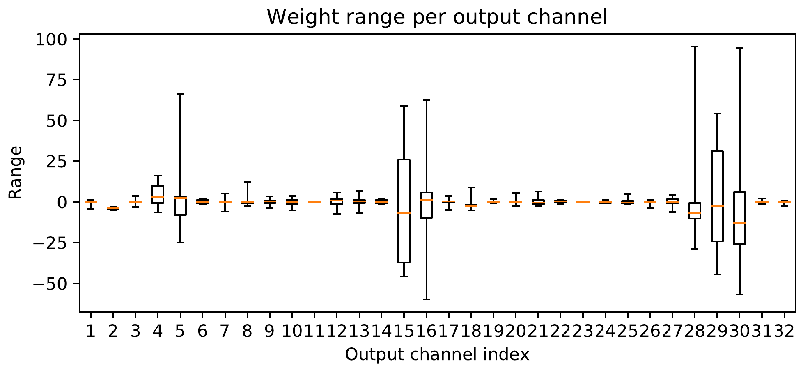

Quantization turns a float tensor into integers and back. It sets the grid (scale and zero point), rounds each value onto it, and chooses where the range should end so outliers and rounding cost the least. The same round trip runs wherever a quantized tensor is stored or computed; when each tensor's range gets fixed, once after training (post-training quantization, PTQ) or during training (quantization-aware training, QAT), is the subject of Post-Training Quantization: Dynamic and Static.
Fewer bits per number cost less memory, bandwidth and energy. Fewer bits mean faster inference (running the trained model on new inputs), and integer operations use less power than float on most hardware. Two terms are used throughout. A tensor is the array of numbers a layer holds or passes on, and an activation is a layer's output, the numbers it hands to the next layer.
Quantizing to int8 stores each number as the nearest of 256 evenly spaced grid levels instead of a 32-bit float; the spacing of the levels (the scale) and where zero sits (the zero point) decide how much is lost. It is the same rounding an ADC applies to a voltage, see ADC Fundamentals.
1 Scale and zero point
The scale is the spacing between grid levels and the zero point is the integer that stands for float 0 (Jacob et al., 2018). Float zero must land exactly on a grid level, because zero padding and ReLU zeros are everywhere and must stay exact (both taught in CNN Basics).
1.1 Symmetric grids for weights
The zero point is 0, so the integer grid stays centered on zero.
The scale is the largest absolute value divided by the top integer, 127 for int8 and 7 for the 4-bit grid below.
Weights use the symmetric grid, because they are usually centered on 0. The card below runs the recipe on a 4-bit grid, integers from −7 to 7. Take a few illustrative weights: the largest sets the bin width, each weight rounds to its nearest bin and reads back as that bin's value, and each line of the card is one of those moves.
The symmetric recipe sets the scale from the biggest weight, snaps with a clamp, maps back, and measures the error.
\(s\) is the scale, one bin's width on the integer grid: set from \(\text{largest} \lvert \text{weight} \rvert\) divided by 7, the largest integer a symmetric 4-bit grid holds on either side of zero. One large weight forces all the small ones into a handful of bins.
\(\hat{x}\) is the weight mapped back to a float: multiply the bin index by the bin width to get the float the bin stands for. This is where the recipe maps the integer back.
MSE, the mean squared error (the loss of Linear Regression), averages the squared gap between each original weight and its mapped back value over all the weights.
1.2 Asymmetric grids for skewed values
The zero point is usually not 0, because the grid shifts to fit the data.
The scale is the full value range divided by 255 (for quint8, PyTorch's unsigned 8-bit type, integers 0 to 255).
PyTorch's observers (small modules that watch a tensor's values and record its range) stretch the range to include 0 before computing the zero point, so float 0 always lands on an integer level.
Activations use the asymmetric grid, because ReLU outputs are never negative.
Figure 1. 256 equal bins over an illustrative range, one integer each.
Once scale and zero point set the grid, the levels, the step, and the signal quality all follow from the bit-width.
The step is the scale \(s\) from the cards above: the gap between neighboring levels, the smallest change the grid can represent. This card uses the full asymmetric grid, so the range splits into \(2^{N} - 1\) gaps. The symmetric card drops one level to stay centered on zero, so it divides by the largest integer the grid holds on either side of zero.
SNR, spelled out as signal-to-noise ratio, is how clean the snapped-back signal is next to the original, measured in decibels: it grows by about 6 for every bit of width, plus a fixed 1.76. The rule assumes a sine wave that fills the whole range and rounding noise spread evenly over one step; real tensors come close but not exactly. Each dropped bit about doubles the step and costs about 6 dB.
SNR: 49.92 dB
signal quality vs the 8-bit reference
Figure 2. Each bit lost about doubles the step.
2 Quantize one tensor
Quantizing a tensor with the shifted grid takes four moves: find its range, cut the range into 256 buckets, round each float to its nearest bucket, and read the bucket back as a float. The gap between the float and the value read back is the rounding error.
Figure 3. Six illustrative floats quantized to 8 bits, step by step.
A float becomes a bucket index by dividing by the bucket width and shifting by the bucket that stands for 0; reading back undoes both.
The scale \(s\) is one bucket's width: the tensor's range divided by 255, because 256 buckets have 255 gaps between them. Setting it from the observed \(\min\) and \(\max\) makes the grid cover exactly the values present.
The zero point \(z\) is the bucket that stands for float 0. It is rounded to a whole bucket so that 0 reads back exactly, which zero padding and ReLU outputs need. Float 0 sits a whole number of buckets above the bottom, set by where 0 falls in the range, and rounds to that bucket. Because the range contains 0, \(z\) lands inside the 0 to 255 grid; when a range starts above 0, PyTorch's observers first stretch it down to 0, so \(z\) never leaves the grid.
Dividing by \(s\) counts how many buckets \(x\) sits from 0, rounding picks the nearest whole bucket, and adding \(z\) shifts the count so the range starts at bucket 0.
Reading back undoes the shift and multiplies by the bucket width. Only the rounding cannot be undone, so the error \(x - \hat{x}\) is at most half a bucket, \(\frac{s}{2}\).
\(\min\) the tensor's smallest value\(\max\) the tensor's largest value\(s\) the scale, one bucket's width255 the gaps between 256 buckets\(z\) the zero pointround snaps to the nearest bucket\(x\) a float\(x_{q}\) the bucket index\(\hat{x}\) the snapped-back float· times
A full quantizer clamps each bucket index to the integer grid.
A value outside the range the scale was set from would land on a bucket the 8-bit grid does not have, so clamp sends it to the nearest end bucket, 0 or 255. That clamping is the clipping error that Section 4 trades against rounding error.
The listing runs the same round trip in PyTorch on the six floats from the walkthrough.
import torch
x = torch.tensor(
[-0.21, -0.05, 0.12,
0.34, 0.52, 0.77])
s = (x.max() - x.min()) / 255
z = torch.round(-x.min() / s)
xq = torch.round(x / s) + z
xq = xq.clamp(0, 255)
x_hat = s * (xq - z)
# worst error, at most s/2
err = (x - x_hat).abs().max()
1The range split into 255 steps gives the scale.
2The zero point: the bucket float 0 lands on.
3Each float snaps to its bucket and stays on the 8-bit grid.
4Reading back gives the worst error, at most half a step.
3 A real weight histogram
Real weights rarely fill their range evenly. On the symmetric grid from Scale and zero point the scale is set by the biggest weight, so the largest weight sets the width of every bin. Figure 4 puts the 288 first-layer weights (32 filters of 3 by 3) of the MNIST CNN from our run of the companion notebook on a 4-bit grid; filter 15 holds the largest weight. It stands only a little above the next largest weight, so leaving it out narrows every bin a little and lowers the error a little too; the far larger outlier channels of Figure 5 cost far more.
original weights (288)after quantize + dequantizefilter 15, home of the largest weight
round-trip MSE
Figure 4. Dropping the largest weight narrows every bin a little.
4 Where the range should end
At low bit-widths the decision that matters most is where to cut the range. A wide range keeps the outliers but makes each bin wide, so ordinary values lose precision. A tight range gives narrow bins but clips the outliers to the range end.
For example, on the real weights of Figure 4, cutting the range a little short of the full min-max span clips a few outliers, but every bin gets narrower, and the total error comes down. The first card says how a range sets the scale and splits the error; the second names the two ways to pick the range.
A candidate clipping range [\(q_{\min}\), \(q_{\max}\)] sets the scale, and the total error splits into the two ways a weight can miss.
The scale is the clipping range being tried, from \(q_{\min}\) to \(q_{\max}\), split into 15, the number of steps between the 16 levels of the full 4-bit grid, 0 to 15. The symmetric weight grid from Scale and zero point leaves one level unused to stay centered on 0, so it has 14 steps, from −7 to 7.
Each term is a mean squared error over all the weights: a weight outside the range adds to clipping, a weight inside adds to rounding, and the two add up to the total.
Two named strategies pick [\(q_{\min}\), \(q_{\max}\)]: min-max makes clipping zero, MSE makes the total of the card above as small as it can be.
The MSE strategy tries candidate ranges \(r\) and keeps the one whose round trip loses least. \(\hat{x}_{r}\) is the tensor quantized with the scale range \(r\) gives and read back, and \(\lVert x - \hat{x}_{r} \rVert^{2}\) sums the squared gaps: the total of the card above times the number of weights, so the winner has the lowest total. Tight bins, but the outliers get clipped.
A third technique (Nagel et al., 2021) sets the range from the batch-norm parameters when a layer has batch norm (a layer that rescales activations to a steady range), so only large outliers get clipped.

Figure 5. Paper Fig. 5: "Per (output) channel weight ranges of the first depthwise-separable layer in MobileNetV2 …" arXiv:2106.08295
These per-channel weight ranges (one range per output channel, a channel being the output of one convolution filter) come from MobileNetV2 (a small network built for phones, built from depthwise-separable convolutions), after batch-norm folding (the batch norm scale and shift absorbed into the convolution weights). Most channels are tiny, a few are enormous, and one global min-max range set by the outlier channels costs every normal channel rounding error.
The listing runs both strategies on the full 16-level grid, 0 to 15, with the 288 real weights of Figure 4 as w.
import numpy as np
# round trip on 16 levels, 0 to 15
def rt(x, lo, hi):
s = (hi - lo) / 15
q = np.round((x - lo) / s)
q = np.clip(q, 0, 15)
return lo + s * q
def mse(w, lo, hi):
return np.mean((w - rt(w, lo, hi))**2)
def compare(w):
mm = mse(w, w.min(), w.max())
ts = np.linspace(0.2, 1.0, 41)
errs = [mse(w, t * w.min(),
t * w.max())
for t in ts]
return mm, ts[np.argmin(errs)], min(errs)
1Quantize and read back on the 16-level grid from lo to hi, and score the round trip by its MSE.
2Min-max uses the tensor's own extremes.
3The MSE strategy shrinks the range by each factor t and keeps the lowest error.
4.1 Wider range, wider bins
Illustrative weights on the 4-bit grid
Error vs range width
MSE-optimalmin-maxcurrent rangeuneven drag
total MSE
Figure 6. Illustrative weights; too tight clips, too wide fattens bins.
A network has hundreds of tensors, and activations only exist at run time: who measures their ranges, and when? Post-Training Quantization: Dynamic and Static answers that, running this same round trip in PyTorch with observers, QConfig and convert.
5 References
Nagel, M., et al. (2021). A White Paper on Neural Network Quantization. arXiv:2106.08295. Source of Figure 5 and of the min-max and MSE accuracy data.
Jacob, B., et al. (2018). Quantization and Training of Neural Networks for Efficient Integer-Arithmetic-Only Inference. arXiv:1712.05877. Source of the scale and zero point scheme for integer-only inference.